Nothingness
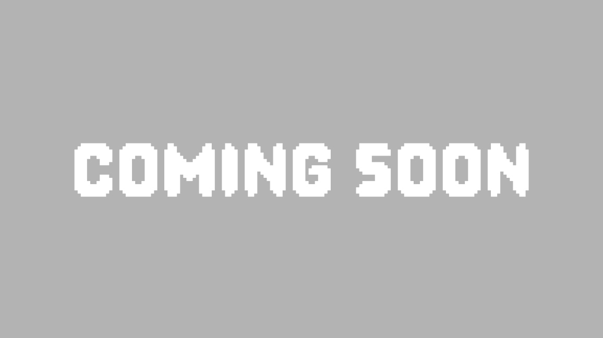
A visual novel mystery game where you have to help your friends to find your stolen souls and
escape nothingness.
(Unity, 2025-2026)
Hello~! I am a game developer student and a hobbyist illustrator from Espoo, Finland. I'm currently
doing my final year in Metropolia University of Applied Sciences, studying ICT and majoring in game
development. I specialize in art and storytelling, but I also enjoy coding and problem-solving.
Before studying in Metropolia, I studied graphic design and illustration for a year in Lahti
Academy of Liberal and Fine Arts. Here in my portfolio, I've collected some of my favorites from
the projects I've worked on.
Feel free to contact me using the methods at the bottom of
this page!
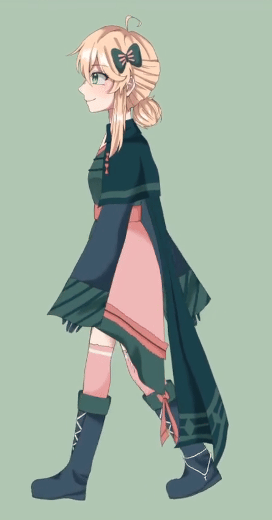
Below are my newest game projects, with links leading you to play each one directly in your browser.

A visual novel mystery game where you have to help your friends to find your stolen souls and
escape nothingness.
(Unity, 2025-2026)
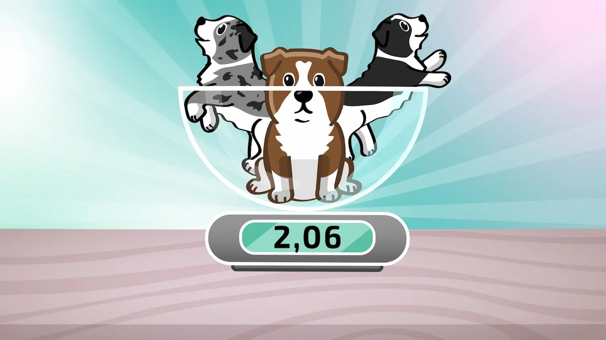
A minigame made for the puppy live hosted by YLE (Yleisradio, a Finnish Broadcasting Company)
where your task is to stop excited puppies from wreaking havoc in your apartment.
(Unity, 2024)
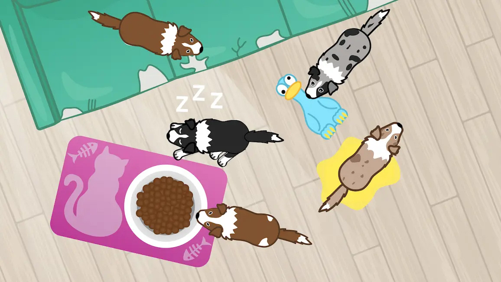
A minigame made for the puppy live hosted by YLE (Yleisradio, a Finnish Broadcasting Company)
where your task is to weigh puppies and prevent them from escaping.
(Unity, 2024)
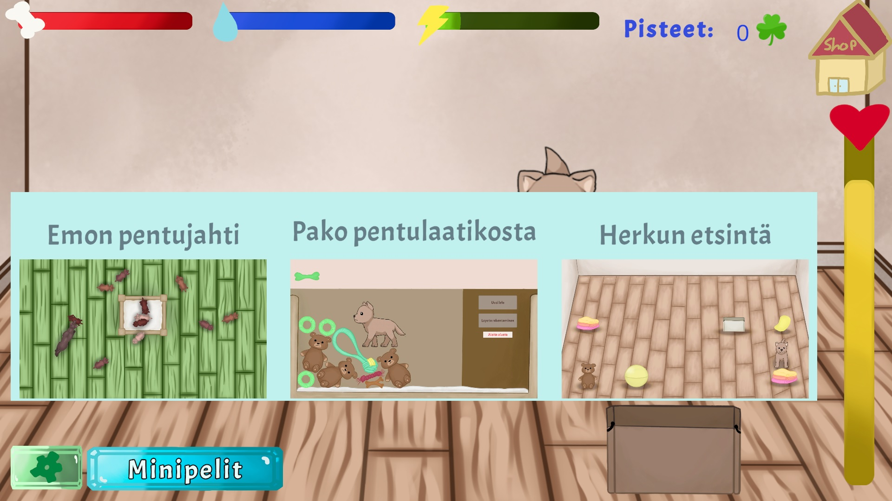
A set of minigames in a Tamagochi-stype puppy game. Group project. I was responsible for the
minigames, the leaderboard, the start menu, the inventory, and the store.
(Unity, 2024)

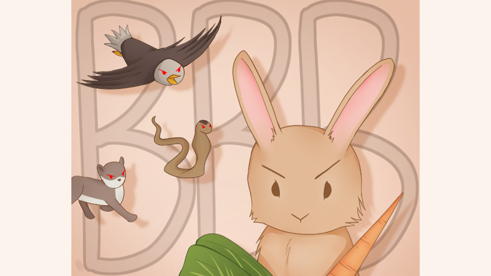
A shooter game where you control a bunny and shoot the enemies with carrots and bok choys.
Parody of Space Invaders.
(Unity, 2023)
Below are my illustrations and other artworks. I have been making art since I was very young, and I have a lot of experience with personal art, commissions and collaborations. I especially enjoy character designing and art with horror elements.

An horror birthday illustration. Inspired by the game Resident Evil 7: Biohazard. (2024)
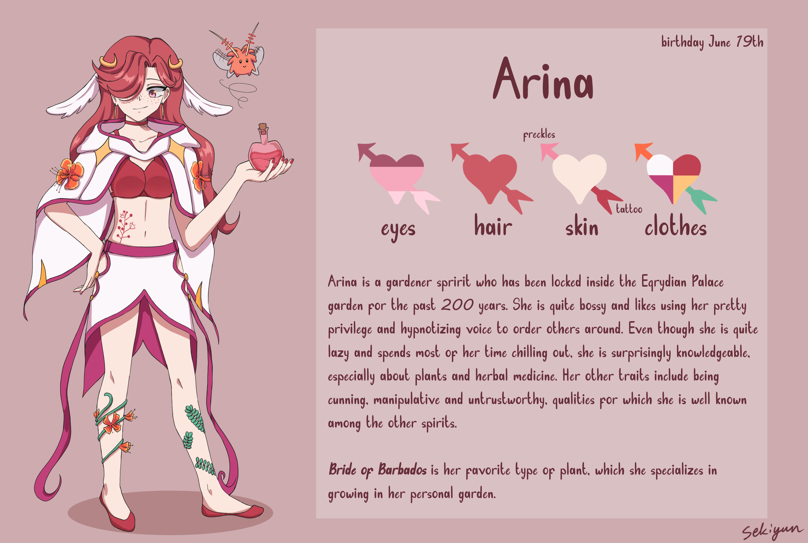
A reference sheet for my original character Arina. (2024)

A lonely dinner. Inspired by the Netflix show Re:Mind. (2024)

A character commission. The prompt was given by the commissioner, but the the character is fully designed by me. (2023)

Halloween illustration of my original character made for a collaboration with another artist. (2023)
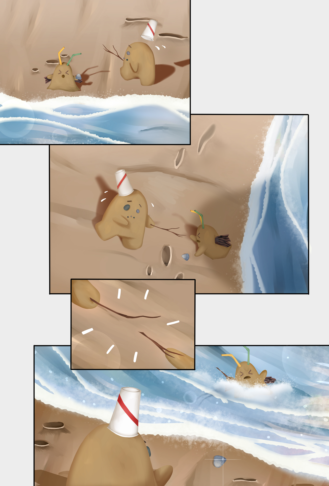
A pre-assignment comic for my applicaion for the animation program in Metropolia. (2022)
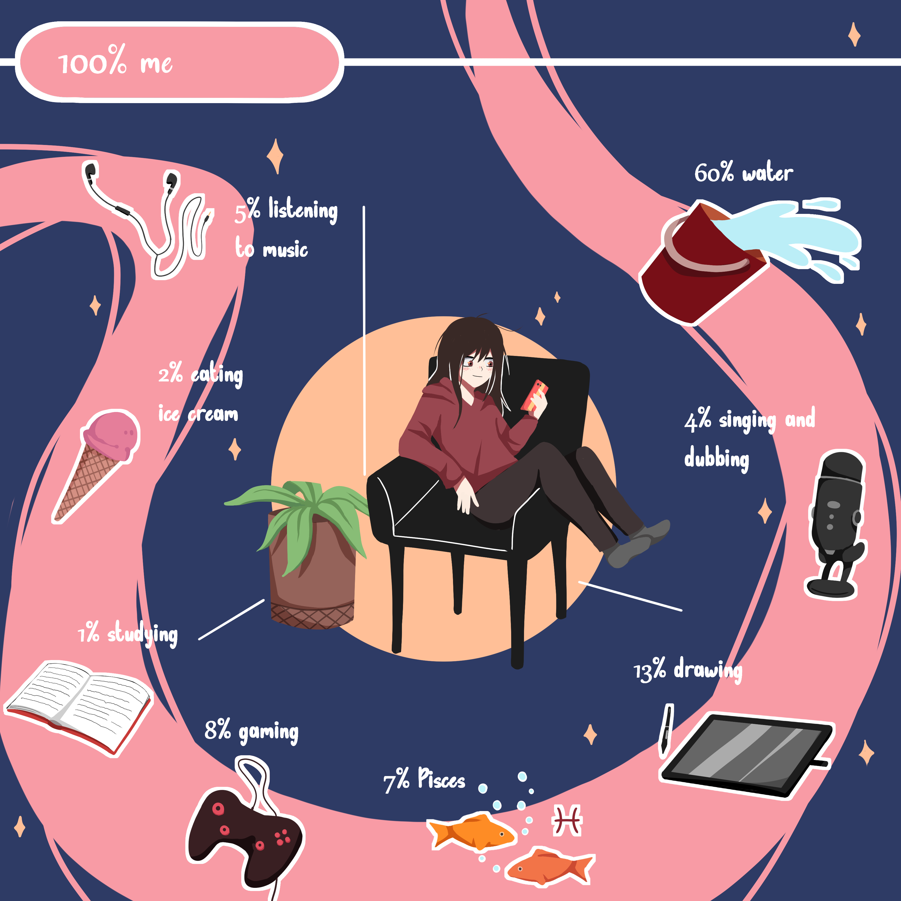
An infographic assignment I made of myself. (2022)

A practice assignment. (2022)
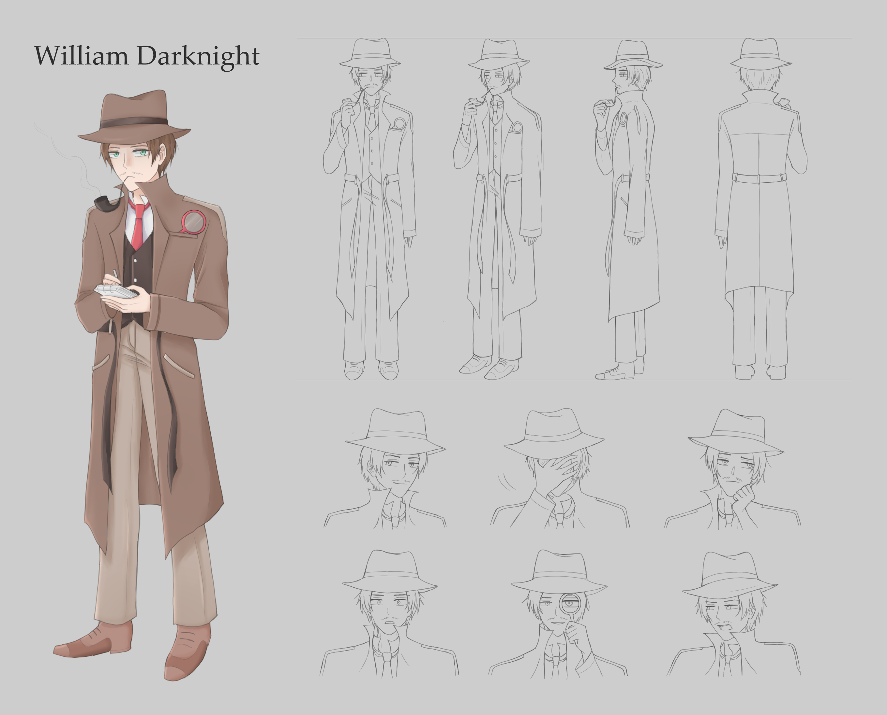
An assignment for creating a detective character. (2021)

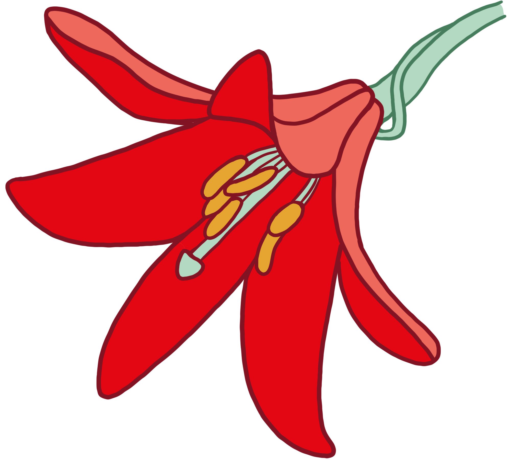